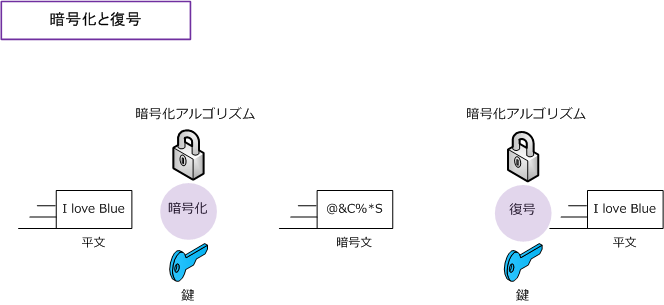
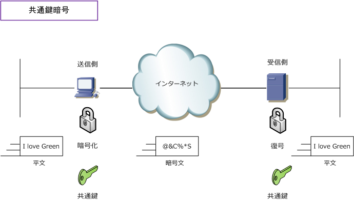
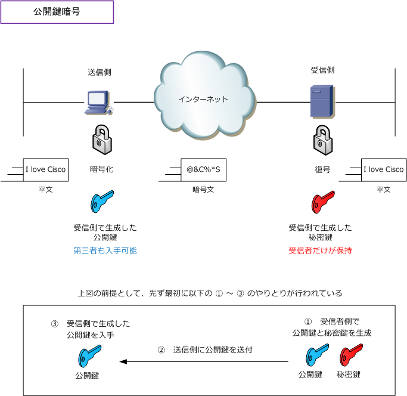
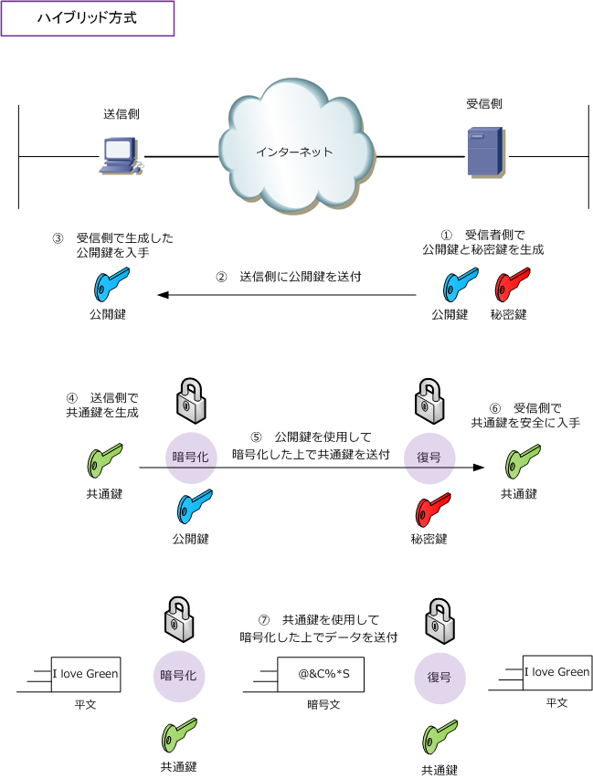

Common key cryptosystem / Public key cryptosystem
暗号化と復号
インターネットのような誰でもアクセス可能なパブリックなネットワーク上でデータを伝送するためには、 第三者にデータを盗み見されたり、改ざんされないようにデータを暗号化して送信することが一般的です。 送信する際にデータを暗号化して、受信した際にデータの復号（暗号データを元に戻す処理）を行います。 暗号化や復号は、暗号化アルゴリズムと鍵によって行われます。イメージとしては下図のようになります。

2種類の暗号化方式
暗号化方式には共通鍵暗号と公開鍵暗号の2つがあります。共通鍵暗号では、暗号化と復号に同じ鍵を使用 します。共通鍵暗号で使用するアルゴリズムには「RC4、DES、3DES、AES」などがあります。現在主流な 暗号化方式は「AES」です。AESは、無線LANのWPA2でも採用されている暗号化方式です。共通鍵暗号では 通信接続先ごとに共通鍵を生成する必要があり、また、鍵交換を盗聴されないよう安全に行う必要があります。

もう1つの公開鍵暗号では、暗号化と復号に別の鍵を使用します。暗号化に使用する鍵は公開鍵と言い、 復号に使用する鍵は秘密鍵と言います。公開鍵暗号では、受信者側にて公開鍵と秘密鍵を生成します。
そして、公開鍵だけを送信側の暗号鍵として公開して、その公開鍵で暗号化されたデータを秘密鍵を使用 して復号します。この秘密鍵は誰にも公開しません。当然、公開鍵を第三者が手に入れて、暗号データを 入手しても復号することはできません。なぜならこの非公開の秘密鍵でしか復号することができないから です。なお、公開鍵暗号で使用するアルゴリズムにはRSAとElGamalがあります。

| 暗号化方式 | 共通鍵暗号 | 公開鍵暗号 |
|---|---|---|
| 暗号化アルゴリズム | RC4、DES、3DES、AES | RSA、ElGamal |
| 使用する暗号鍵 | 共通鍵 | 公開鍵、秘密鍵 |
| 鍵の管理 | 通信接続先ごとに作成 | 通信接続先の数に関係なく１つだけ作成 |
| 鍵の交換 | 第三者に知られないよう安全に交換 | 作成した公開鍵を一般に公開 |
| データの処理時間 | 速い | 遅い |
※ 共通鍵暗号の共通鍵と、IPsec-VPNで使用するPre-shared key（事前共有鍵）は全くの別ものです。混同しないように！
共通鍵暗号では、処理時間が高速なのですが、第三者に鍵の情報が分かってしまうとデータが復号されて しまうという問題があります。また、公開鍵暗号では、安全に鍵の情報を保持できるのですが、処理時間が 非常に遅いという問題があります。そこで、これら2つの方式の利点を兼ね備えたハイブリッド方式という 手法があります。ハイブリッド方式では、共通鍵を安全に渡すために、鍵交換の際には公開鍵暗号を使用 して、実際のデータの暗号化には共通鍵を使用します。これにより鍵は安全に配布でき、高速処理できます。

※ SSL/TLS通信では、このハイブリッド方式が「デジタル署名」と「デジタル証明書」の技術と組み合わせて使用されます。